Bird Dogs (Brittany)
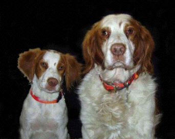 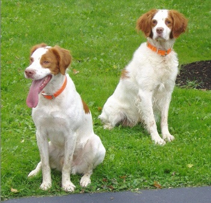
Lakota & Copper - Xmas 2004 <==> Lakota & Copper - Fall 2005
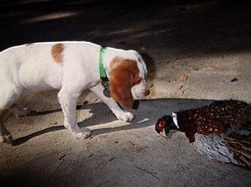 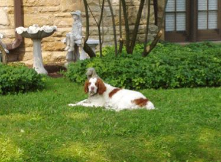
Copper (10 weeks) <==> Copper (9 years)
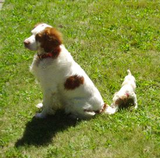 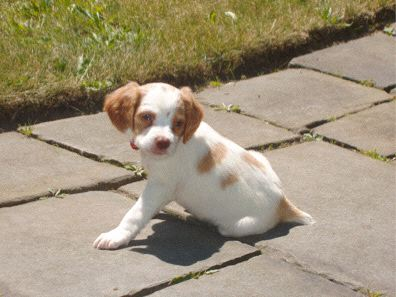
Copper and Lakota (7 weeks) <==> Lakota
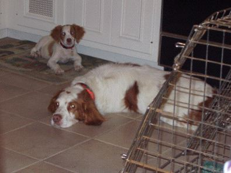
Lakota (10 weeks) and Copper
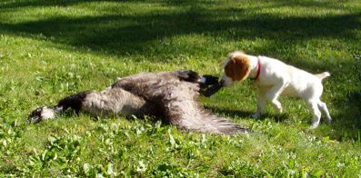 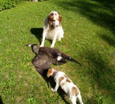
Lakota: "Gee, these things are BIG!" <==> Copper: "Get away from my Goose"
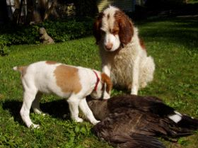 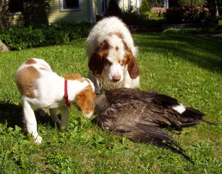
"Did you REALLY fetch this?" <==> "I think it moved!"
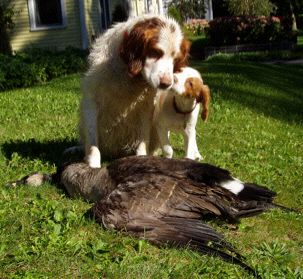 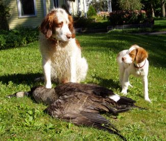
"Congratulations big brother" <==> "I bet I could fetch it too" Copper thinking: "Well, at least he has spunk"
Top of page
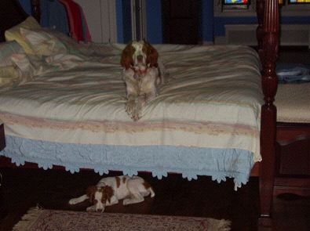
"He can't reach me here"
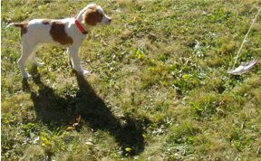 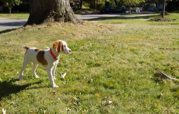
Lakota (16 weekss) begins his training
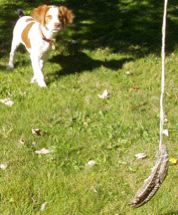 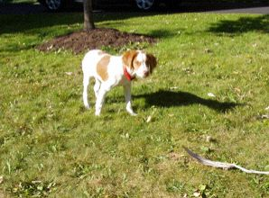 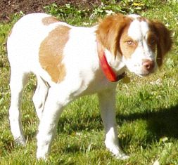
Pure Intensity on Point
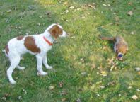
Lakota (4 months) Training with the Real Deal
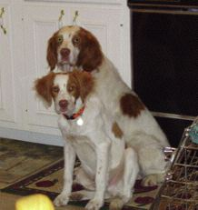 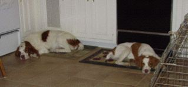 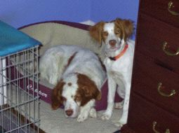
Copper and Lakota (5 months) Relaxing at Home
 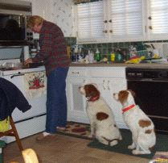
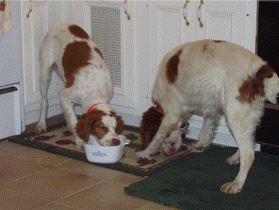
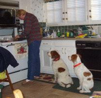
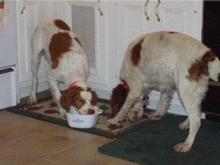
Copper and Lakota (7 months) What has their undivided attention? <==> Could it be ... love? <==> Yes, love of food!
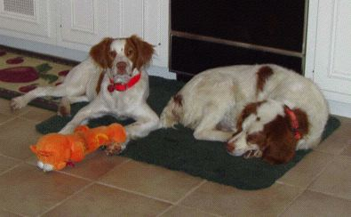 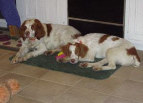
Relaxing after Dinner: Lakota and Copper <==> Copper and Lakota
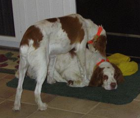 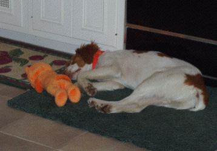
Lakota Grooming Copper <==> Lakota, after a hard day
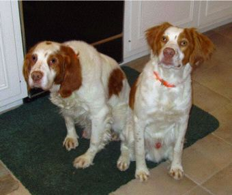 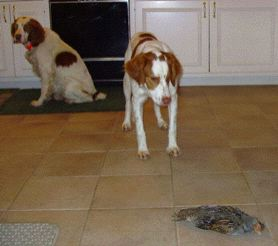
Copper (9.5 yrs) Lakota (8 mos) <==> Lakota pointing Copper's Hun
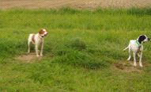 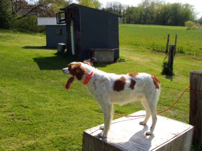 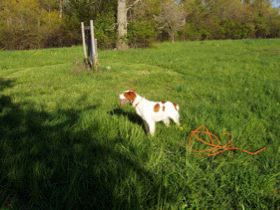
Lakota (11 mos) at Bird Dog Boot Camp: On the Chain Gang <==> Whoa! <==> Whoa!
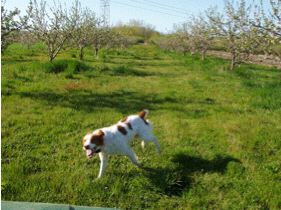 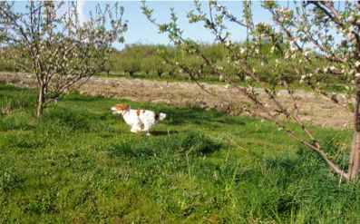
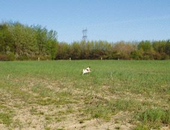 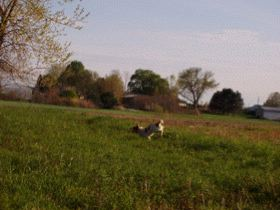 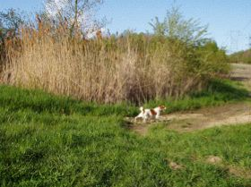
Lakota (11 mos) at Bird Dog Boot Camp: Flying Low
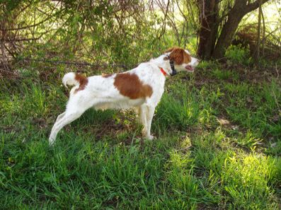 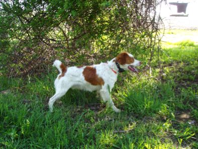 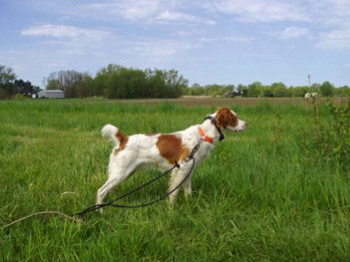 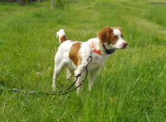
Lakota (11 mos) at Bird Dog Boot Camp: Pointing Birds
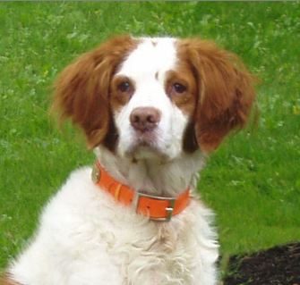
Copper (7/4/95 - 10/21/08)
Located and pointed every bird in the field and retrieved every bird shot over him. A great hunting dog, winning field-trial contestant and loyal companion with a vocabulary of over 35 words and many hand and whistle signals.
Spring, 2010 - Tatanka Ska (White Buffalo) Arrives!
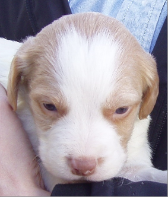 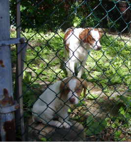 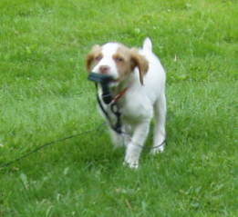 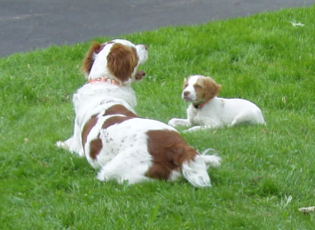 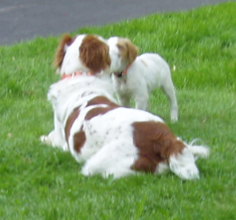
Tatanka at 1 <==> 2 (in kennel with Lakota) <==> 3 (retrieving his leash) <=2=> and 4 (bonding with Lakota) months old
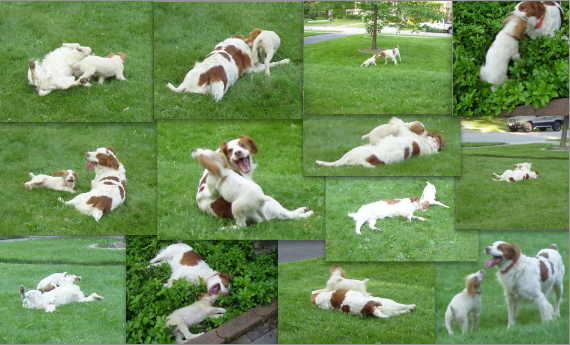
Tatanka at 4 months old playing with Lakota and later resting with/on him
Tatanka (4 months) and Lakota Bonded
Top of page
Home | Bird Dogs (Brittany) | Hunting Field & Water Trials | Upland Bird & Waterfowl Hunting | Deer Hunting (Bow, Shotgun, & Rifle) | Model Trains | Other Pleasures